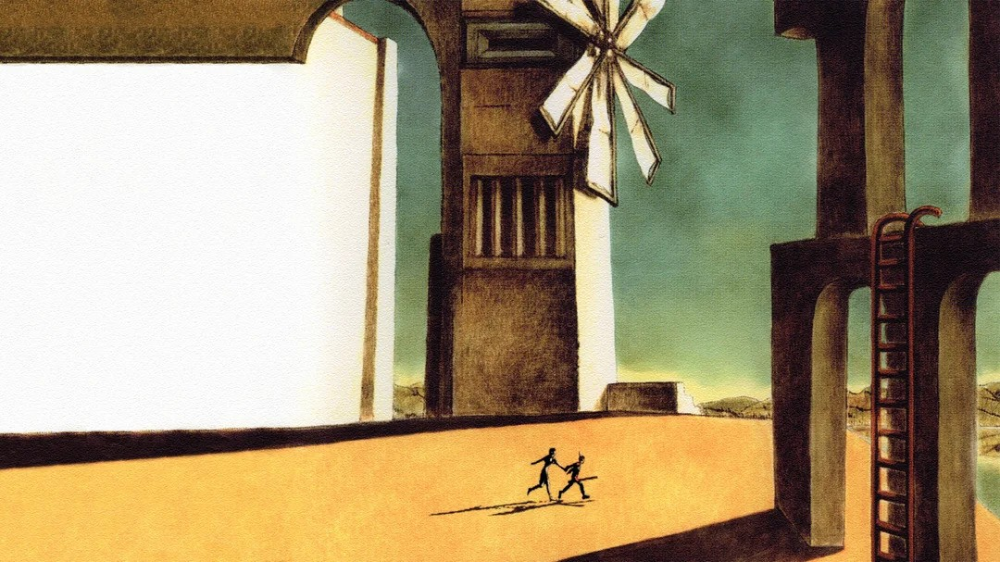

His First Masterpiece: Ico
Minimalism and Simplicity
The game uses a sparse, understated visual approach, emphasizing simple, clean lines and shapes. This minimalism helps to create an atmosphere of solitude and mystery.
Architectural Design
The game's environments are characterized by large, ancient structures that blend elements of various architectural styles, including Gothic and Romanesque influences. The castle in which the game is set feels vast, mysterious, and almost otherworldly.
Ico Environments Ico BuildingsThe Greatest Game Ever Made: Shadow of The Colossus
Mesopotamian and Babylonian Architecture: The game's massive stone structures and ziggurat-like designs are reminiscent of ancient Mesopotamian architecture.
Mythological Creatures: The colossi themselves are inspired by mythical creatures and giants from various cultural legends, adding to the game's epic and timeless feel.
Through its groundbreaking design and storytelling, Shadow of the Colossus has left an indelible mark on the video game industry, influencing countless games and developers and contributing to the evolution of video games as a form of artistic expression.